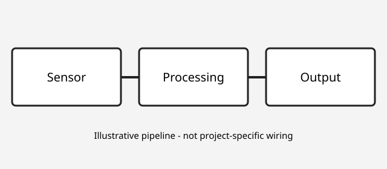

About Me
Background
I'm a Computer Engineering student at UC San Diego with an interest in hardware engineering, embedded systems, and software development. Through my coursework and projects, I've gained experience with programming, digital circuits, operating systems, and machine learning. I enjoy solving technical problems and learning how hardware and software work together.
Core Interests
- Embedded systems and sensors
- Operating systems and low-level programming
- Digital logic and electronics
- Data analysis and machine learning
Education
University of California, San Diego (UCSD)
Major: Computer Engineering
Relevant Coursework
- Operating Systems
- Machine Learning
- Digital Circuit Design
- Control Systems
- Probabilistic Models
Technical Skills
Programming Languages
- Python
- C
- Java
- MATLAB
Hardware
- Digital Circuit Design
- CMOS Circuit Design
- Circuit Analysis
- Cadence Virtuoso
Software and Tools
- Git and GitHub
- Linux
- VS Code
- MATLAB and Simulink
Other Technical Knowledge
- Machine Learning
- Operating Systems
- Embedded Systems
- Data Analysis
Systems Thinking
I enjoy understanding how hardware and software work together to solve engineering problems. This diagram shows how sensor measurements can be processed to produce useful outputs.

My Approach
Correctness is important in engineering, but understanding and explaining why a solution works is just as valuable.
Career Goals
My goal is to work in hardware engineering, embedded systems, or software development. I'm interested in opportunities where I can apply my technical knowledge, continue learning, and contribute to real engineering projects.
Portfolio Progress
Current portfolio preparation:
Project descriptions, education, and technical skills are included. Additional project images and details will be added later.